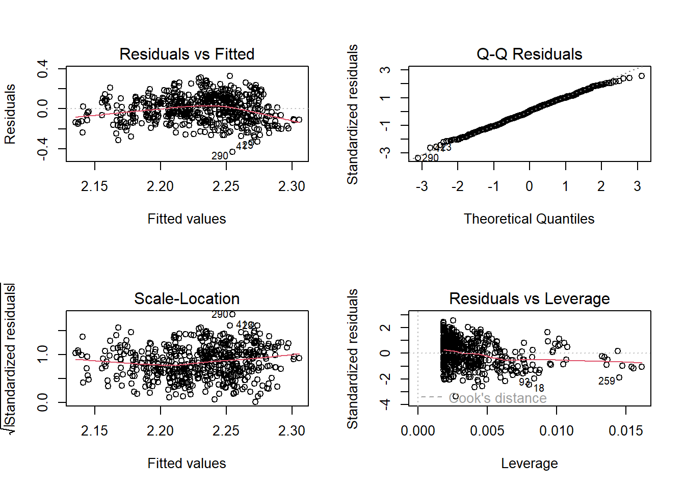
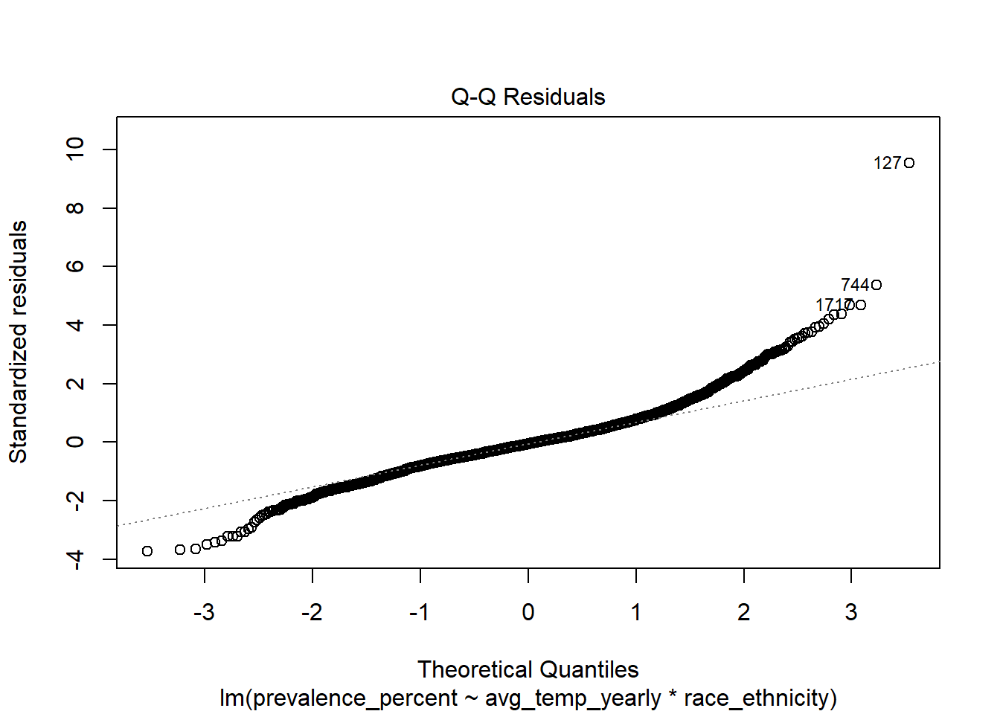
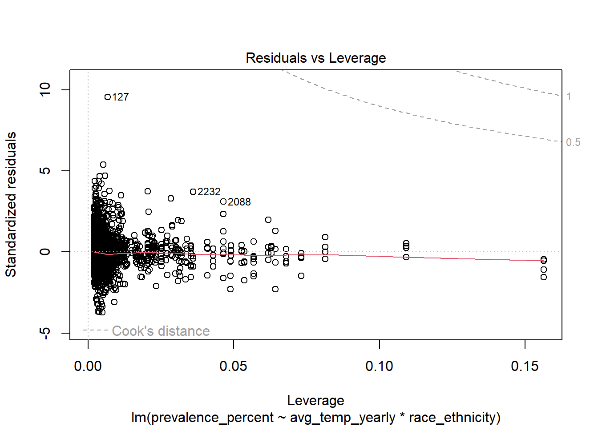
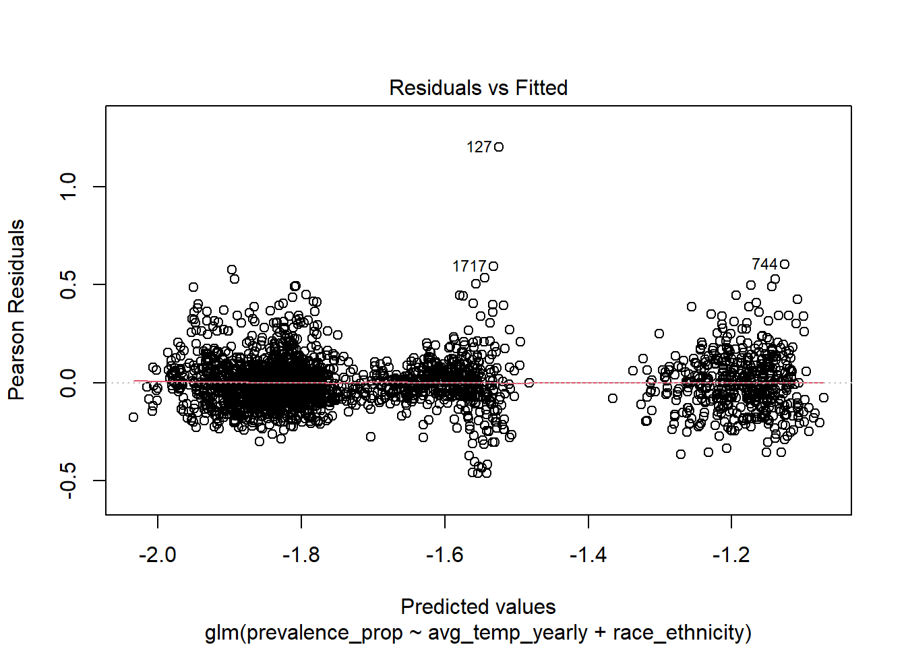
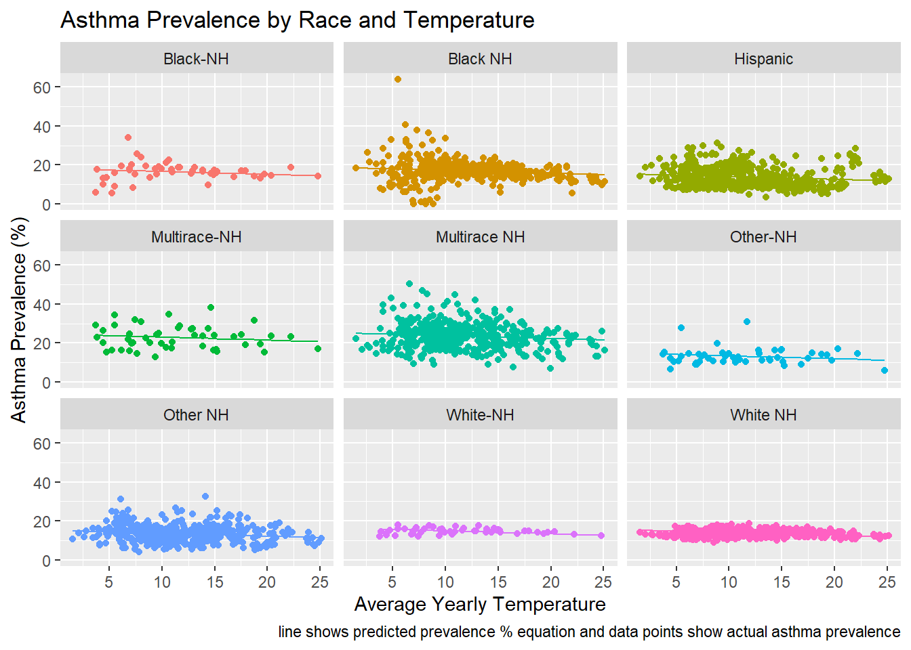

asthma_data
For maps and figures on weather trends, please refer to the maps page.
Asthma data
#write the data loading steps
asthma_2011 = read_html("https://www.cdc.gov/asthma/brfss/2011/tableC1.htm") %>%
html_table() %>%
bind_rows() %>%
janitor::clean_names() %>%
select(1:4) %>%
filter(!state %in% c("U.S. Total**", "Territories", "PR")) %>%
mutate(year = "2011")
#i use current asthma prevalence (table c1) rather than lifetime prevalence and only keep the prevalence percent (instead of numbers)
#i am excluding PR, VI, and GU
#write the functions for data loading
asthma_hmtl = function(url) {
df =
read_html(url) %>%
html_table() %>%
bind_rows() %>%
janitor::clean_names() %>%
select(1:4) %>%
mutate(standard_error = as.numeric(standard_error)) %>%
filter(!state %in% c("U.S. Total**", "U.S. Totalf", "Territories", "PR", "GU", "VI")) %>%
mutate(prevalence_percent = as.numeric(prevalence_percent))
}
#prevalence
asthma_prevalence =
tibble(
year_name = 2011:2021,
data_url = c(
"https://www.cdc.gov/asthma/brfss/2011/tableC1.htm",
"https://www.cdc.gov/asthma/brfss/2012/tableC1.htm",
"https://www.cdc.gov/asthma/brfss/2013/tableC1.htm",
"https://www.cdc.gov/asthma/brfss/2014/tableC1.htm",
"https://www.cdc.gov/asthma/brfss/2015/tableC1.htm",
"https://www.cdc.gov/asthma/brfss/2016/tableC1.htm",
"https://www.cdc.gov/asthma/brfss/2017/tableC1.htm",
"https://www.cdc.gov/asthma/brfss/2018/tableC1.html",
"https://www.cdc.gov/asthma/brfss/2019/tableC1.html",
"https://www.cdc.gov/asthma/brfss/2020/tableC1.html",
"https://www.cdc.gov/asthma/brfss/2021/tableC1.html")
) %>%
mutate(asthma_byyear = map(data_url, asthma_hmtl)) %>%
unnest(asthma_byyear) %>%
select(-data_url, -sample_size, -sample_sizec, -standard_error) %>%
group_by(year_name)## New names:
## • `` -> `...9`## Warning: There were 4 warnings in
## `mutate()`.
## The first warning was:
## ℹ In argument:
## `standard_error =
## as.numeric(standard_error)`.
## Caused by warning:
## ! There was 1 warning in
## `mutate()`.
## ℹ In argument:
## `standard_error =
## as.numeric(standard_error)`.
## Caused by warning:
## ! NAs introduced by coercion
<<<<<<< HEAD
## ℹ Run
## `dplyr::last_dplyr_warnings()`
## to see the 3 remaining
=======
## ℹ Run `dplyr::last_dplyr_warnings()` to see the 3 remaining
>>>>>>> 5e131e6fb3b6434be0fb1a17d891441a44f7c21f
## warnings.#starting from 2016, has column called "weighted_number" instead of prevalence number
#2016 and 2021 includes VI (removed)
#2020 and 2021 has U.S. totalf (removed)
#2019 and 2021 only has 49 states (-NJ and -FL)
asthma_prevalence %>%
mutate(year_name = as.factor(year_name)) %>%
ggplot(aes(x = year_name, y = prevalence_percent)) +
geom_boxplot(aes(fill = year_name), color = "blue", alpha = .5) +
labs(
x = "Year",
y = "Prevalence_percent",
title = "Asthma cases by year"
) +
theme_minimal()
asthma_prevalence %>%
ggplot(aes(x = state, y = prevalence_percent)) +
geom_boxplot() +
labs(
x = "State",
y = "Prevalence_percent",
title = "Asthma cases by state"
) +
theme_minimal()
#function 2 for race and income data
asthma_hmtl2 = function(url) {
df =
read_html(url) %>%
html_table() %>%
bind_rows() %>%
janitor::clean_names() %>%
select(1:4) %>%
filter(!state %in% c("U.S. Total**", "U.S. Totalf", "Territories", "PR", "GU", "VI")) %>%
mutate(prevalence_percent = as.numeric(prevalence_percent))
}
#race
asthma_prace =
tibble(
year_name = 2011:2021,
data_url = c(
"https://www.cdc.gov/asthma/brfss/2011/tableC4.htm",
"https://www.cdc.gov/asthma/brfss/2012/tableC4.htm",
"https://www.cdc.gov/asthma/brfss/2013/tableC4.htm",
"https://www.cdc.gov/asthma/brfss/2014/tableC4.htm",
"https://www.cdc.gov/asthma/brfss/2015/tableC4.htm",
"https://www.cdc.gov/asthma/brfss/2016/tableC4.htm",
"https://www.cdc.gov/asthma/brfss/2017/tableC4.htm",
"https://www.cdc.gov/asthma/brfss/2018/tableC4.html",
"https://www.cdc.gov/asthma/brfss/2019/tableC4.html",
"https://www.cdc.gov/asthma/brfss/2020/tableC4.html",
"https://www.cdc.gov/asthma/brfss/2021/tableC4.html")
) %>%
mutate(asthma_byyear = map(data_url, asthma_hmtl2)) %>%
unnest(asthma_byyear)
#2020, race designation is in column raceg. 2021 in column race_ethnicityg
asthma_prace = asthma_prace %>%
select(-data_url, -sample_size, -sample_sizec) %>%
mutate(
race = ifelse(is.na(race), raceg, race),
race = ifelse(is.na(race), race_ethnicityg, race)
) %>%
select(-raceg, -race_ethnicityg) %>%
nest(race, prevalence_percent)## Warning: Supplying `...` without names
## was deprecated in tidyr
## 1.0.0.
<<<<<<< HEAD
## ℹ Please specify a name for
## each selection.
## ℹ Did you want `data =
## c(race,
## prevalence_percent)`?
## Call
## `lifecycle::last_lifecycle_warnings()`
## to see where this warning was
## generated.#income
asthma_pincome =
tibble(
year_name = 2011:2021,
data_url = c(
"https://www.cdc.gov/asthma/brfss/2011/tableC7.htm",
"https://www.cdc.gov/asthma/brfss/2012/tableC7.htm",
"https://www.cdc.gov/asthma/brfss/2013/tableC7.htm",
"https://www.cdc.gov/asthma/brfss/2014/tableC7.htm",
"https://www.cdc.gov/asthma/brfss/2015/tableC7.htm",
"https://www.cdc.gov/asthma/brfss/2016/tableC7.htm",
"https://www.cdc.gov/asthma/brfss/2017/tableC7.htm",
"https://www.cdc.gov/asthma/brfss/2018/tableC7.html",
"https://www.cdc.gov/asthma/brfss/2019/tableC7.html",
"https://www.cdc.gov/asthma/brfss/2020/tableC7.html",
"https://www.cdc.gov/asthma/brfss/2021/tableC6.html")
) %>%
mutate(asthma_byyear = map(data_url, asthma_hmtl2)) %>%
unnest(asthma_byyear) %>%
select(-data_url, -sample_size, -sample_sizec) %>%
nest(income, prevalence_percent)## Warning: Supplying `...` without names
## was deprecated in tidyr
## 1.0.0.
<<<<<<< HEAD
## ℹ Please specify a name for
## each selection.
## ℹ Did you want `data =
## c(income,
## prevalence_percent)`?
## Call
## `lifecycle::last_lifecycle_warnings()`
## to see where this warning was
## generated.#asthma dataset
asthma_dataset =
inner_join(asthma_prevalence, asthma_prace, by = c("year_name", "state")) %>%
inner_join(asthma_pincome, by = c("year_name", "state")) %>%
janitor::clean_names() %>%
rename("race" = "data_x", "income" = "data_y")fit linear regression
# 1. merge asthma prevalance and temp data
# import two dataset
temp_df = read_csv("data/temp_data.csv")## Rows: 2193 Columns: 4
<<<<<<< HEAD
## ── Column specification ──────
=======
## ── Column specification ────────────────────────────────────
>>>>>>> 5e131e6fb3b6434be0fb1a17d891441a44f7c21f
## Delimiter: ","
## chr (2): state, season
## dbl (2): year, avg_temp
##
## ℹ Use `spec()` to retrieve the full column specification for this data.
## ℹ Specify the column types or set `show_col_types = FALSE` to quiet this message.summary(temp_df)## state year season avg_temp
## Length:2193 Min. :2011 Length:2193 Min. :-14.00
## Class :character 1st Qu.:2013 Class :character 1st Qu.: 6.03
## Mode :character Median :2016 Mode :character Median : 11.85
## Mean :2016 Mean : 11.88
## 3rd Qu.:2019 3rd Qu.: 19.41
## Max. :2021 Max. : 30.26asthma_df = read_csv("data/asthma_data.csv")## Rows: 559 Columns: 3
<<<<<<< HEAD
## ── Column specification ──────
=======
## ── Column specification ────────────────────────────────────
>>>>>>> 5e131e6fb3b6434be0fb1a17d891441a44f7c21f
## Delimiter: ","
## chr (1): state
## dbl (2): year_name, prevalence_percent
##
## ℹ Use `spec()` to retrieve the full column specification for this data.
## ℹ Specify the column types or set `show_col_types = FALSE` to quiet this message.summary(asthma_df)## year_name state prevalence_percent
## Min. :2011 Length:559 Min. : 6.200
## 1st Qu.:2013 Class :character 1st Qu.: 8.500
## Median :2016 Mode :character Median : 9.400
## Mean :2016 Mean : 9.423
## 3rd Qu.:2019 3rd Qu.:10.200
## Max. :2021 Max. :13.200# find the yearly temperature by state
temp_yearly_df =
temp_df |>
group_by(state, year) |>
summarize(avg_yearly = mean(avg_temp)) |>
select(state, year_name = year, avg_temp_yearly = avg_yearly)## `summarise()` has grouped
## output by 'state'. You can
## override using the `.groups`
## argument.# merge two dataset
merged_df =
left_join(asthma_df, temp_yearly_df, by=c("state", "year_name")) |>
drop_na()
# after merging yearly avg temperature and prevalence, DC has no temp data# 2. do EDA and check distribution assumption
temp_df |>
ggplot(aes(x = avg_temp)) +
geom_histogram() +
labs(
title = "distribution of average temperature in 2011-2021",
xlab = "average temperature",
ylab = "frequency"
)## `stat_bin()` using `bins =
## 30`. Pick better value with
## `binwidth`.asthma_df |>
ggplot(aes(x = prevalence_percent)) +
geom_histogram() +
labs(
title = "distribution of prevalence in 2011-2021",
xlab = "prevalence (percent)",
ylab = "frequency"
)## `stat_bin()` using `bins =
## 30`. Pick better value with
## `binwidth`.# two variables generally follows normal distribution# bar plot of temperature and line plot of prevalence by each state
merged_df |>
mutate(state = reorder(state, avg_temp_yearly)) |>
group_by(state) |>
summarize(prevalence = mean(prevalence_percent),
temp = mean(avg_temp_yearly)) |>
ggplot(aes(x = state)) +
geom_bar(aes(y = temp), stat = "identity", fill = "skyblue") +
geom_line(aes(y = prevalence, group = 1)) +
geom_point(aes(y = prevalence), color = "red") +
scale_y_continuous(
name = "temperature",
sec.axis = sec_axis(~., name = "Prevalence (%)")
) +
labs(
title = "Temperature and Prevalence by State",
color = "legend"
)# 3. do linear regression
model = lm(prevalence_percent ~ avg_temp_yearly, data = merged_df)
summary(model)##
## Call:
## lm(formula = prevalence_percent ~ avg_temp_yearly, data = merged_df)
##
## Residuals:
## Min 1Q Median 3Q Max
## -3.4130 -0.8298 -0.0355 0.8194 3.6082
##
## Coefficients:
## Estimate Std. Error t value Pr(>|t|)
## (Intercept) 10.18623 0.13850 73.544 < 2e-16 ***
## avg_temp_yearly -0.06715 0.01085 -6.187 1.21e-09 ***
## ---
## Signif. codes: 0 '***' 0.001 '**' 0.01 '*' 0.05 '.' 0.1 ' ' 1
##
## Residual standard error: 1.205 on 545 degrees of freedom
## Multiple R-squared: 0.06562, Adjusted R-squared: 0.0639
## F-statistic: 38.27 on 1 and 545 DF, p-value: 1.209e-09par(mfrow = c(2,2))
plot(model)# try log transform outcome
model_log =
merged_df |>
mutate(log_precalence = log(prevalence_percent)) |>
lm(log_precalence ~ avg_temp_yearly, data = _)
summary(model_log)##
## Call:
## lm(formula = log_precalence ~ avg_temp_yearly, data = mutate(merged_df,
## log_precalence = log(prevalence_percent)))
##
## Residuals:
## Min 1Q Median 3Q Max
## -0.43034 -0.08722 0.00406 0.09288 0.32761
##
## Coefficients:
## Estimate Std. Error t value Pr(>|t|)
## (Intercept) 2.316561 0.014729 157.280 < 2e-16 ***
## avg_temp_yearly -0.007225 0.001154 -6.259 7.84e-10 ***
## ---
## Signif. codes: 0 '***' 0.001 '**' 0.01 '*' 0.05 '.' 0.1 ' ' 1
##
## Residual standard error: 0.1281 on 545 degrees of freedom
## Multiple R-squared: 0.06707, Adjusted R-squared: 0.06535
## F-statistic: 39.18 on 1 and 545 DF, p-value: 7.839e-10par(mfrow = c(2,2))
plot(model_log)
# 4. results explanation and visualizationRace Data & Asthma Prevalance
Function to download and tidy html table from online
race_table = function(url, year ){
table=
read_html(url)|>
html_table()|>
first()|>
slice(-1:-5)
table|>
janitor::clean_names()|>
select(-c(x,x95_percent_ci_number))|>
mutate(year= year)
}
race_table1 = function(url, year){
table=
read_html(url)|>
html_table()|>
first()|>
slice(-1:-5)
table|>
janitor::clean_names()|>
mutate( year= year)
}
race_table_a8 = function(url, year){
html= read_html(url)
table=
html|>
html_table()|>
first()|>
slice(-1:-5)
table|>
janitor::clean_names()|>
select(-c(x))|>
mutate(
year= year)
}Run function on all years:
race_2011= race_table("https://www.cdc.gov/asthma/brfss/2011/tableL5.htm", 2011)
race_2012= race_table("https://www.cdc.gov/asthma/brfss/2012/tableL5.htm", 2012)
race_2013= race_table("https://www.cdc.gov/asthma/brfss/2013/tableL5.htm", 2013)
race_2014= race_table("https://www.cdc.gov/asthma/brfss/2014/tableL5.htm", 2014)
race_2015= race_table("https://www.cdc.gov/asthma/brfss/2015/tableL5.htm", 2015)
race_2016= race_table("https://www.cdc.gov/asthma/brfss/2016/tableL5.htm", 2016)
race_2017= race_table1("https://www.cdc.gov/asthma/brfss/2017/tableL5.htm", 2017)
race_2018= race_table_a8("https://www.cdc.gov/asthma/brfss/2018/tableL5.html", 2018)
race_2019= race_table_a8("https://www.cdc.gov/asthma/brfss/2019/tableL5.html", 2019)
race_2020= race_table_a8("https://www.cdc.gov/asthma/brfss/2020/tableL5.html", 2020)|>
mutate( race_ethnicity= race_ethnicityg)|>
select(-race_ethnicityg)I excluded 2021 since the brackets for race ethnicity were changed and no longer consistent with the previous years where there was a multirace NH category which was no longer used.
Merged Race data:
race_data=
bind_rows(race_2011, race_2012, race_2013, race_2014, race_2015, race_2016,
race_2017, race_2018, race_2019, race_2020)|>
select(-c(x,weighted_number,x95_percent_ci_weighted_number, weighted_numbere, x95_percent_c_id_weighted_number, x95_percent_c_id_percent, sample_sizec, sample_size, prevalence_number , x95_percent_ci_percent, standard_error)) %>%
rename(year_name = year)
race_data## # A tibble: 2,611 × 4
## state race_ethnicity prevalence_percent year_name
## <chr> <chr> <dbl> <dbl>
## 1 AL White NH 12.4 2011
## 2 AL Black NH 10.4 2011
## 3 AL Other NH 10.3 2011
## 4 AL Multirace NH 25.1 2011
## 5 AL Hispanic 11.5 2011
## 6 AK White NH 13.2 2011
## 7 AK Black NH 26.4 2011
## 8 AK Other NH 11.7 2011
## 9 AK Multirace NH 18.6 2011
## 10 AK Hispanic 19.7 2011
## # ℹ 2,601 more rowsrace_asthma_df =
left_join(merged_df, race_data, by = c("state", "year_name")) %>%
drop_na() %>%
select(-prevalence_percent.x) %>%
rename(prevalence_percent = prevalence_percent.y) %>%
mutate(prevalence_prop = prevalence_percent / 100)lm_by_race = lm(prevalence_percent ~ avg_temp_yearly + race_ethnicity, data = race_asthma_df)
summary(lm_by_race)##
## Call:
## lm(formula = prevalence_percent ~ avg_temp_yearly + race_ethnicity,
## data = race_asthma_df)
##
## Residuals:
## Min 1Q Median 3Q Max
## -17.596 -2.661 -0.236 2.163 46.087
##
## Coefficients:
## Estimate Std. Error t value Pr(>|t|)
## (Intercept) 18.60071 0.33528 55.478 < 2e-16 ***
## avg_temp_yearly -0.14368 0.02033 -7.068 2.04e-12 ***
## race_ethnicityBlack-NH -0.54138 0.72491 -0.747 0.45524
## race_ethnicityHispanic -3.18205 0.31672 -10.047 < 2e-16 ***
## race_ethnicityMultirace NH 6.56011 0.32544 20.158 < 2e-16 ***
## race_ethnicityMultirace-NH 5.83005 0.72491 8.042 1.36e-15 ***
## race_ethnicityOther NH -3.55159 0.32489 -10.932 < 2e-16 ***
## race_ethnicityOther-NH -3.81893 0.72491 -5.268 1.50e-07 ***
## race_ethnicityWhite NH -3.13522 0.32345 -9.693 < 2e-16 ***
## race_ethnicityWhite-NH -2.25567 0.72491 -3.112 0.00188 **
## ---
## Signif. codes: 0 '***' 0.001 '**' 0.01 '*' 0.05 '.' 0.1 ' ' 1
##
## Residual standard error: 4.81 on 2440 degrees of freedom
## Multiple R-squared: 0.392, Adjusted R-squared: 0.3898
## F-statistic: 174.8 on 9 and 2440 DF, p-value: < 2.2e-16plot(lm_by_race)interaction_model = lm(prevalence_percent ~ avg_temp_yearly * race_ethnicity, data = race_asthma_df)
summary(interaction_model)##
## Call:
## lm(formula = prevalence_percent ~ avg_temp_yearly * race_ethnicity,
## data = race_asthma_df)
##
## Residuals:
## Min 1Q Median 3Q Max
## -17.873 -2.632 -0.269 2.138 45.727
##
## Coefficients:
## Estimate Std. Error t value Pr(>|t|)
## (Intercept) 19.26447 0.62907 30.624 < 2e-16
## avg_temp_yearly -0.19907 0.04886 -4.075 4.76e-05
## race_ethnicityBlack-NH -2.94187 1.76588 -1.666 0.0959
## race_ethnicityHispanic -3.38366 0.85437 -3.960 7.70e-05
## race_ethnicityMultirace NH 7.04395 0.88396 7.969 2.44e-15
## race_ethnicityMultirace-NH 4.28849 1.76588 2.429 0.0152
## race_ethnicityOther NH -4.55026 0.88064 -5.167 2.57e-07
## race_ethnicityOther-NH -5.72745 1.76588 -3.243 0.0012
## race_ethnicityWhite NH -5.02337 0.87773 -5.723 1.17e-08
## race_ethnicityWhite-NH -4.21273 1.76588 -2.386 0.0171
## avg_temp_yearly:race_ethnicityBlack-NH 0.20822 0.14079 1.479 0.1393
## avg_temp_yearly:race_ethnicityHispanic 0.01630 0.06664 0.245 0.8068
## avg_temp_yearly:race_ethnicityMultirace NH -0.04128 0.06892 -0.599 0.5493
## avg_temp_yearly:race_ethnicityMultirace-NH 0.13264 0.14079 0.942 0.3463
## avg_temp_yearly:race_ethnicityOther NH 0.08359 0.06862 1.218 0.2233
## avg_temp_yearly:race_ethnicityOther-NH 0.16493 0.14079 1.171 0.2415
## avg_temp_yearly:race_ethnicityWhite NH 0.15844 0.06839 2.317 0.0206
## avg_temp_yearly:race_ethnicityWhite-NH 0.16920 0.14079 1.202 0.2296
##
## (Intercept) ***
## avg_temp_yearly ***
## race_ethnicityBlack-NH .
## race_ethnicityHispanic ***
## race_ethnicityMultirace NH ***
## race_ethnicityMultirace-NH *
## race_ethnicityOther NH ***
## race_ethnicityOther-NH **
## race_ethnicityWhite NH ***
## race_ethnicityWhite-NH *
## avg_temp_yearly:race_ethnicityBlack-NH
## avg_temp_yearly:race_ethnicityHispanic
## avg_temp_yearly:race_ethnicityMultirace NH
## avg_temp_yearly:race_ethnicityMultirace-NH
## avg_temp_yearly:race_ethnicityOther NH
## avg_temp_yearly:race_ethnicityOther-NH
## avg_temp_yearly:race_ethnicityWhite NH *
## avg_temp_yearly:race_ethnicityWhite-NH
## ---
## Signif. codes: 0 '***' 0.001 '**' 0.01 '*' 0.05 '.' 0.1 ' ' 1
##
## Residual standard error: 4.804 on 2432 degrees of freedom
## Multiple R-squared: 0.3955, Adjusted R-squared: 0.3913
## F-statistic: 93.6 on 17 and 2432 DF, p-value: < 2.2e-16plot(interaction_model)
fit_logistic = glm(prevalence_prop ~ avg_temp_yearly + race_ethnicity,
data = race_asthma_df,
family = binomial())## Warning in eval(family$initialize): non-integer #successes in a binomial glm!summary(fit_logistic)##
## Call:
## glm(formula = prevalence_prop ~ avg_temp_yearly + race_ethnicity,
## family = binomial(), data = race_asthma_df)
##
## Coefficients:
## Estimate Std. Error z value Pr(>|z|)
## (Intercept) -1.46569 0.18788 -7.801 6.13e-15 ***
## avg_temp_yearly -0.01080 0.01164 -0.928 0.3536
## race_ethnicityBlack-NH -0.03948 0.40637 -0.097 0.9226
## race_ethnicityHispanic -0.24636 0.18331 -1.344 0.1790
## race_ethnicityMultirace NH 0.41040 0.17052 2.407 0.0161 *
## race_ethnicityMultirace-NH 0.36779 0.36390 1.011 0.3122
## race_ethnicityOther NH -0.27802 0.18967 -1.466 0.1427
## race_ethnicityOther-NH -0.30061 0.44180 -0.680 0.4962
## race_ethnicityWhite NH -0.24247 0.18743 -1.294 0.1958
## race_ethnicityWhite-NH -0.17006 0.42323 -0.402 0.6878
## ---
## Signif. codes: 0 '***' 0.001 '**' 0.01 '*' 0.05 '.' 0.1 ' ' 1
##
## (Dispersion parameter for binomial family taken to be 1)
##
## Null deviance: 65.418 on 2449 degrees of freedom
## Residual deviance: 40.051 on 2440 degrees of freedom
## AIC: 897.04
##
## Number of Fisher Scoring iterations: 5plot(fit_logistic)
race_asthma_df =
race_asthma_df %>%
mutate(yhat = predict(lm_by_race, newdata = race_asthma_df))
ggplot(race_asthma_df, aes(x = avg_temp_yearly, y = prevalence_percent, color = race_ethnicity)) +
geom_point() +
geom_line(aes(y = yhat)) +
facet_wrap(~ race_ethnicity) +
labs(
title = "Asthma Prevalence by Race and Temperature",
x = "Average Yearly Temperature",
y = "Asthma Prevalence (%)",
caption = "line shows predicted prevalence % equation and data points show actual asthma prevalence"
) +
theme(legend.position="none")